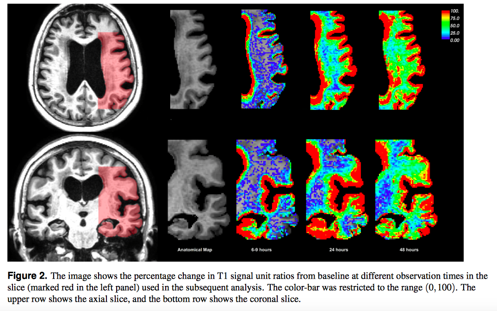
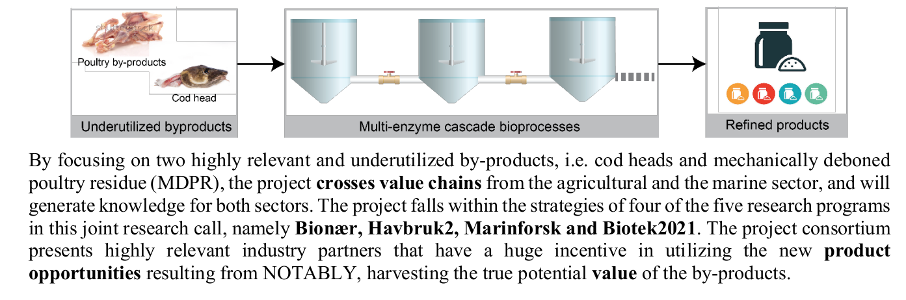

Kent-Andre Mardal, Professor in Mechanics, Department of Mathematics,
University of Oslo
and
Adjunct Research Scientist,
Simula Research Laboratory
E-mail:
kent-and@math.uio.no,
kent-and@simula.no
A brief, noncomplete, and not completely up to date summary of recent projects:
Alzheimer's physics : Towards a framework for mathematical modeling of the processes leading to Alzheimer's disease, 2020-2024 (PI)
Neurodegenerative diseases are a pressing concern in Europe and Alzheimer's disease costs
was estimated to 100-200 billion euros in the European union in 2010 alone. To address the looming Alzheimer's disease crisis medical researchers
are asking fundamental questions about metabolic waste clearance in the brain. New theories have upended centuries of previous medical opinion; however these theories are not without controversy and the experimental methods themselves have been called into question. Mathematical modeling have revealed deficiencies and revised the new theories; but these mathematical models fall short due to a lack of accounting for complex geometries, neglecting coupling effects, multi-physics, or relevant time scales. As such, advancing the mathematical modeling of the medical theories is a timely subject and is getting increased attention.
This proposal aim to provide the next generation of mathematical models and software tools for this important medical problem. In particular, we address appropriate mathematical models that encompass not only multi-physics effects at both short and long time-scales but also involve fundamental questions of the appropriate preconditioning of monolithic multi-scale
solvers. In our solution algorithms we employ a newly developed multi-level component where Laplace operators of mixed fractionality are utilised at the interface. This utility has not been explored for multi-physics problems despite their canonical appearance.

Collaborators are Anders Dale (San Diego), Per Kristian Eide (Oslo University Hostpital),
Sylvie Lorthois (Toulouse) ,
Marie Rognes (Simula) , and
Paolo Zunino (Mox, Milano).
SciML Scientific Machine Learning, 2019-2023 (PI)
Partial differential equations (PDEs) have been studied for centuries and have seen an impressive utilization in scientific computing (SC) during the last sixty years due to increasingly powerful computers. Alongside the utilization, a powerful theoretical foundation has been developed and this foundation ensures both efficient computations and accurate results. In the last ten years, an explosion of usage of machine learning (ML) techniques in the form of deep neural networks (DNNs) has demonstrated a wide range of successes due to both high-performance computing and vast amounts of available data. Despite the similarities between the different areas, the synergies' effects have so far been sparse, in particular on the theoretical level. This proposal aims to bridge the gap between these areas. The project addresses challenges on the long-term horizon in the IKTPluss program. There are three crucial developments in the theory of computational methods for PDEs that should be merged with DNN. The first is the development of more reliable and robust machine learning techniques by exploiting multigrid (MG) techniques developed for the solution of PDEs. The second is the integration of DNNs into an MG framework. And the third topic concerns the integration of DNNs and FEM to enable the learning of computational models. These theoretical developments should be accompanied by software development and relevant applications. Here, applications in biology and medicine are of particular importance because the underlying principles are often not well understood. In particular, we will investigate a novel mechanism related to Alzheimer's disease.
The project is a joint collaborative effort with Simula Research Laboratory with Simon Funke (Simula),
Klas Pettersen (NORA) ,
Ludmil Zikatanov (Penn State),
and George Karniadakis (Brown).
More about the project here.
Notably, 2019-2021
Every year around 35000 tonnes of chicken hull and 72000 tonnes of cod heads are produced in Norwegian food production.
A lot is disposed as waste due to the fact that it is currently not economical to utilize these parts of the animals.
However, obviously these parts do contain many valuable components that should be better utilized. The aim of the Notably research project is
to understand how to process and use the chicken hull and cod heads. In particular we aim to understand the process of enzymatic proteinhydrolysis
by using computational fluid dynamics simulation.

The project is a collaboration with Nofima, a Norwegian research center for food industry and fishing industry.
The project is lead by Nils Kristian Afseth.
Some info about the project can be found here (in Norwegian). At Simula, Simon Funke and Miroslav Kuchta participate.
Waterscape: The Numerical Waterscape of the Brain, 2016-2019
Our brain has its own waterscape: Whether you are reading or sleeping, fluid flows through your brain tissue and clears out waste. New medical research has shown that this waterscape is more essential than what was previously believed and that this flow is indeed crucial for the brain's well-being. In particular, the waste accumulation is linked to neurological diseases such as dementia (Alzheimer's disease) and to brain swelling caused by stroke.
PI is
Marie Rognes , more about the project can be found here .
CBC: Center for Biomedical Computing, 2007-2017, Simula
From 2007-2017 I was project leader for "Biomedical Flows and Structure"
within this center of Excellence (the largest funding scheme from the Norwegian research council).
. This center was among other things crucial
in the early FEniCS development and our efforts into various biomedical modeling projects.
More about the center can be found here.